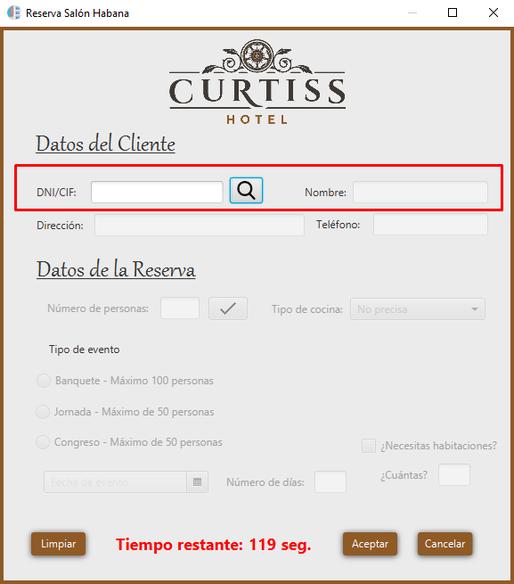

Esta ventana de ayuda le indicará paso a paso como funciona la búsqueda de Clientes en ambas reservas (Reserva Salón y Reserva Habitaciones).

Para hacer una búsqueda, lo primero que debemos realizar es añadir el DNI/CIF (un total de 8 letras y un número) de nuestro cliente, pulsamos la tecla de nuestro teclado 'ENTER' o bien, pulsamos en 'la lupa'. Una vez hecho estos pasos, se desbloquearán las demás casillas. Si el usuario con dicho DNI/CIF está creado nos rellenará automáticamente todos sus datos personales. Si no está creado, tendremos que añadir sus datos.